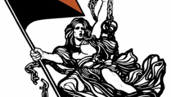

Editorial
Los caballeros de la Idea

Rebeldes e infatigables, lectores y editores, pasionales y discutidores, corajudos y solidarios, individualistas y colectivistas, idealistas y convencidos, pensadores y emprendedores, militantes del amor libre ...